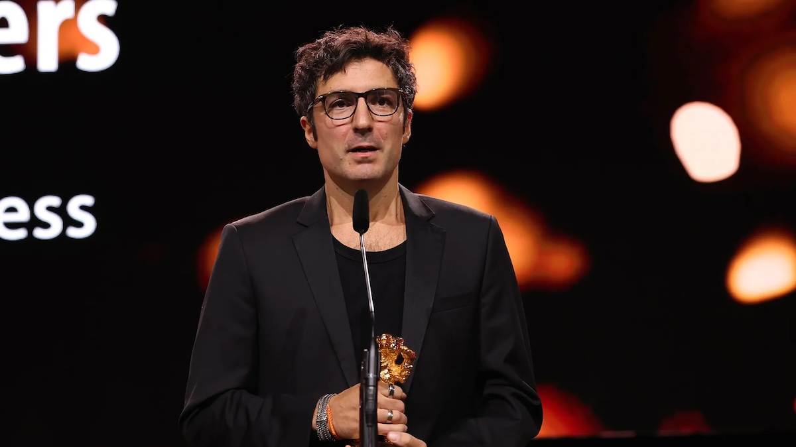

Tebdil-i Stilde Ferahlık Var Mı?
Kelly Reichardt’ın son filmi The Mastermind, prömiyerini bu yıl Cannes’da yaptı.
Editör & Üye Listeleri


Kelly Reichardt’ın son filmi The Mastermind, prömiyerini bu yıl Cannes’da yaptı.
Üzgünüm, Bebeğim, yaşadığı travmatik bir olayın ardından hayata tutunmaya çalışan genç akademisyen Agnes’in hikâyesine odaklanıyor.
O filmler nasıl çekildi? Metropolis, 2001: A Space Odyssey ve daha fazlası..
Documentarist’in düzenlediği 'Hangi İnsan Hakları?' Film Festivali, bu yıl 15. kez gerçekleşiyor.
Kino 2025 programı, 25-29 Kasım tarihleri arasında İzmir’e konuk oluyor.
Del Toro’nun Frankenstein’ı, yönetmenin fantazileri arasında sıkışmış, ‘kalbi’ olmayan bir uyarlama.
Kleber Mendonça Filho, yeni filmi Gizli Ajan'da çeşitli sinema gelenekleri arasında mekik dokuyor.
Berlinale’de bu yıl politik tartışmalar geçtiğimiz yıllardakinden bile daha hararetliydi.
12-23 Mayıs’ta düzenlenecek, 79. Cannes Film Festivali’nin programı belli oldu!
Bilim ile mizah tonunun kurduğu denge sayesinde film, seyir zevkini başarılı bir şekilde sonuna kadar taşımayı başarıyor.
“Seni keşfederler, üst üste iki kez. En iyisi sensin derler. Hollywood’a asla güvenmemeliydin.”
Oliver Laxe imzalı Sirat, seyircide yarattığı şok etkisiyle son yılların en heyecan verici filmlerinden.